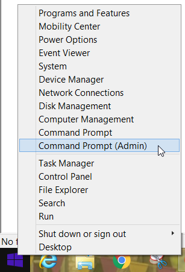
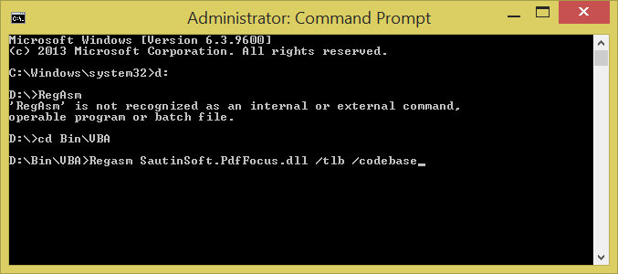
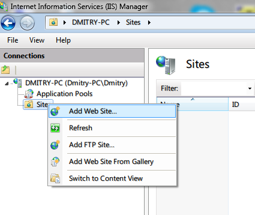
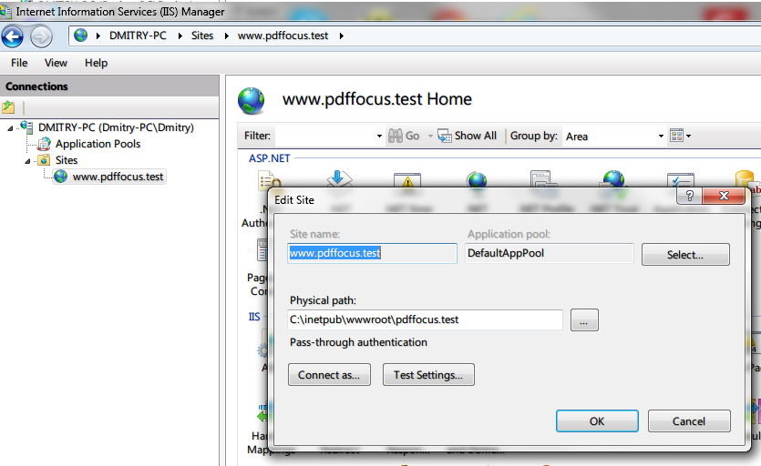
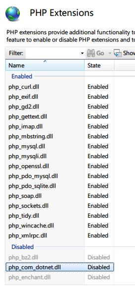
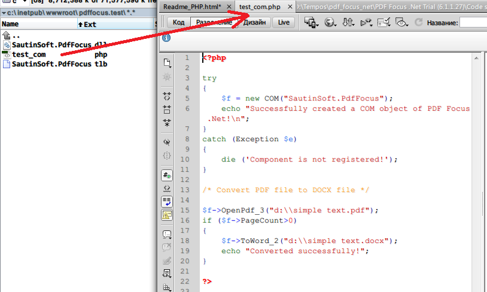
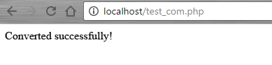

PDF Focus .Net is .Net assembly but it's compiled with ComVisible attribute, therefore you may use it easily as COM component.
Here we'll show the steps how to use PDF Focus .Net in PHP:
To make steps at once:
1. Execute "install.bat" as Administrator.
Or:
1. Right click by "Start" button and run Command prompt (Admin):

2. Add the Assembly to the Registry, launch:
Regasm.exe "A Drive:\A Path\SautinSoft.PdfFocus.dll" /tlb /codebase

Well done! Now we've registered SautinSoft.PdfFocus library. Now you may use the component in VBA, PHP.
RegAsm.exe - Assembly Registration Tool: http://msdn.microsoft.com/en-us/library/tzat5yw6%28v=vs.71%29.aspx.
We've placed the "RegAsm.exe" inside the "Code samples\PHP" for your convenience.
If you have any questions, ask us online at: http://www.sautinsoft.com or email: support@sautinsoft.com
1. Please be sure, that you have registered SautinSoft.PdfFocus.dll for COM Interop as shown above at this page.
2. You must run the IIS server, and set up a simple website.

3. In our example, we will create the project: www.pdffocus.test . Create a folder at: C: \ inetpub \ wwwroot \ pdffocus.test

4. Make sure that you have installed php package (the current version is 7.0) and included php_com_dotnet.dll (Enabled)

5. Create a php-file (test_com.php) and paste the contents:
<?php
try
{
$f = new COM("SautinSoft.PdfFocus");
echo "Successfully created a COM object of PDF Focus .Net!\n";
}
catch (Exception $e)
{
die ('Component is not registered!');
}
/* Convert PDF file to DOCX file */
$f->OpenPdf_3("d:\\simple text.pdf");
if ($f->PageCount>0)
{
$f->ToWord_2("d:\\simple text.docx");
echo "Converted successfully!";
}
?>

6. The last step, run the project to the IIS server. If you did everything right, you will see the inscription: Converted Successfully.

Well Done! Now you can convert your PDF file to All formats in PHP!